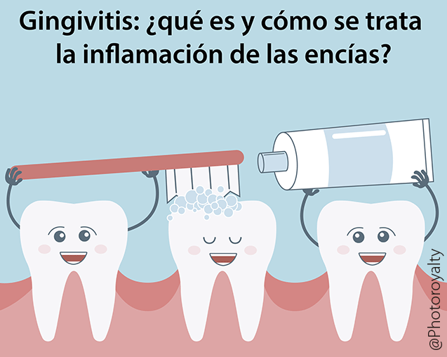

GINGIVITIS

Gingivitis
La gingivitis es una enfermedad periodontal en fase temprana y su aparición tiene una relación directa con la higiene bucodental.
Cuando una persona padece gingivitis, notará cómo sus encías están inflamadas y enrojecidas, pudiendo incluso producirse sangrado. De hecho, la aparición de sangre al lavarse lo dientes debe ponernos en alerta, ya que es un signo claro de la aparición de la enfermedad en nuestra boca.
Al igual que ocurre con las caries, la gingivitis en un problema derivado de una mala higiene dental, por lo que una correcta rutina de limpieza evita que la enfermedad aparezca. Además, debe quedar claro que la gingivitis es una enfermedad bucodental reversible.
Cuando una persona aprecia los síntomas, debe pedir cita a su dentista para que realice un examen exhaustivo en el que, con toda probabilidad, le realizará un profilaxis dental o limpieza bucal profesional.